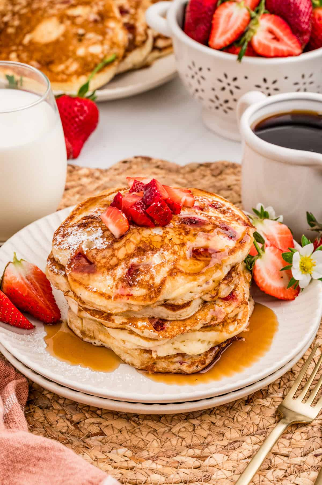

Pancake Recipes

PANCAKES, QUICK SNACK
You have heard of the best pancakes in the world. Have you ever wondered
what really goes into them?
Look no further and let your search stop now, let the excitment begin as
soon as you see this. we have got you covered in with the little or much
as you have.
Ingredients
- Flour
- Milk
- Eggs
- Baking Powder
- Butter or Oil
Steps
-
Mix Dry Ingredients: In a large bowl, whisk together the flour, baking
powder, sugar, and salt.
-
Combine Wet Ingredients: In a separate bowl or measuring jug, whisk
together the milk, egg, melted butter (or oil), and vanilla extract.
-
Combine Wet and Dry: Pour the wet mixture into the dry mixture. Stir
gently with a whisk or spatula just until combined.
Tip: Do not overmix. Small lumps are fine, and overmixing leads to
tough, rubbery pancakes.
-
Rest the Batter: Let the batter rest for 10–15 minutes. This allows the
flour to fully hydrate and the baking powder to activate, resulting in a
fluffier texture.
-
Pour the Batter: Pour approximately 1/4 cup of batter onto the skillet
for each pancake. Do not overcrowd the pan.
-
Cook until Bubbles Form: Cook for 2-3 minutes. Look for bubbles to form
and pop on the surface, and for the edges to look dry and set.
-
Serve: Remove from the pan and serve immediately with butter, maple
syrup, or fruit.